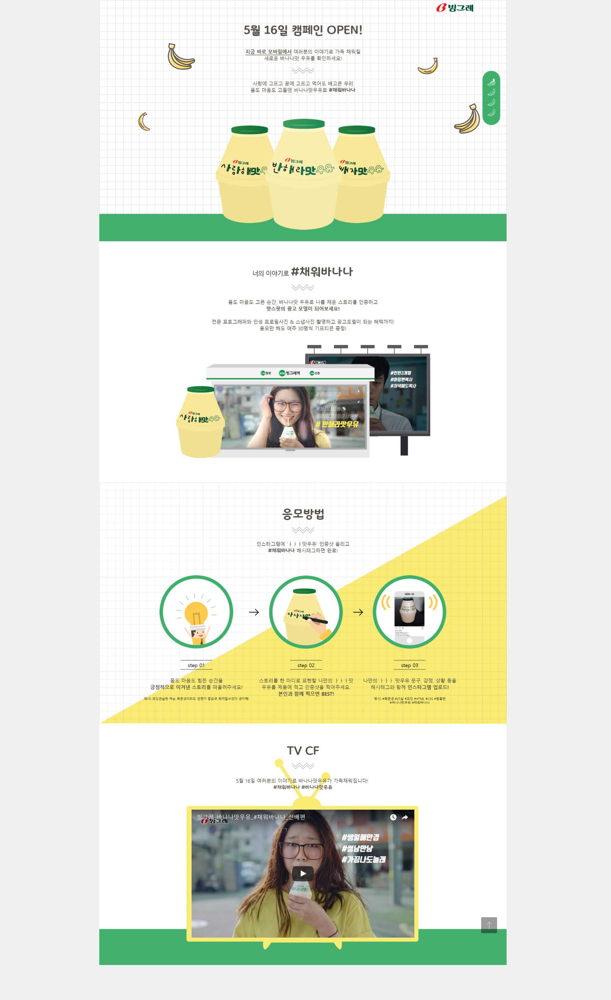

빙그레바나나맛우유 ㅏㅏㅏ맛우유
OVERVIEW
기존의 정적인 바나나맛 우유 캠페인과 달리 패럴랙스 스크롤리을 이용해서 이미지의 배경과 구성요소들의 움직임이나 동작 시간을 다르게 하여 스크롤 할 수 있도록 하는 표현하여 동적인 느낌을 두었습니다. 바나나우유를 많이 이용하는 소비자 연령인 10대~20대를 기준으로 일러스트 강화에 중점을 두었습니다. 마우스 휠로 내려갈 수 있고 우측에 있는 버튼을 통해서 현재 보고 있는 스크롤의 위치 그리고 다른 페이지로 이동할 수 있도록 디자인하였습니다.
Parallax scrolling 이용한 디자인
빙그레 바나나우유 이미지의 배경과 구성요소들의 움직임이나 동작 시간을 다르게 하여 스크롤 할 수 있도록 하는 표현하여 동적인 느낌으로 디자인하였습니다.
소비자연령층 타겟으로한 일러스트
바나나우유를 많이 이용하는 소비자 연령인 10대~20대를 기준으로 일러스트, 아이콘디자인 강화
